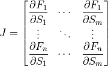
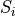
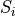

Stability Analysis¶
The stability of a biochemical system is determined by the eigenvalues of the Jacobian matrix. Given
 floating species and
floating species and  reactions, the Jacobian matrix is defined as follows:
reactions, the Jacobian matrix is defined as follows:

where  is the ith differential equation and  the ith floating species. From RoadRunner it is easy to obtain the Jacobian matrix using
is the ith differential equation and  the ith floating species. From RoadRunner it is easy to obtain the Jacobian matrix using getFullJacobian(), i.e.:
Jac = rr.getFullJacobian()
which returns the Jacobian matrix in the variable Jac.
It is possible for full Jacobian to be singular. In these situations one should call the related method, getReducedJacobian().